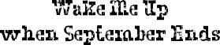

THE REST OF September was hard. I wasn’t used to getting up so early in the morning. I wasn’t used to this whole notion of homework. And I got my first “quiz” at the end of the month. I never got “quizzes” when Mom homeschooled me. I also didn’t like how I had no free time anymore. Before, I was able to play whenever I wanted to, but now it felt like I always had stuff to do for school.
And being at school was awful in the beginning. Every new class I had was like a new chance for kids to “not stare” at me. They would sneak peeks at me from behind their notebooks or when they thought I wasn’t looking. They would take the longest way around me to avoid bumping into me in any way, like I had some germ they could catch, like my face was contagious.
In the hallways, which were always crowded, my face would always surprise some unsuspecting kid who maybe hadn’t heard about me. The kid would make the sound you make when you hold your breath before going underwater, a little “uh!” sound. This happened maybe four or five times a day for the first few weeks: on the stairs, in front of the lockers, in the library. Five hundred kids in a school: eventually every one of them was going to see my face at some time. And I knew after the first couple of days that word had gotten around about me, because every once in a while I’d catch a kid elbowing his friend as they passed me, or talking behind their hands as I walked by them. I can only imagine what they were saying about me. Actually, I prefer not to even try to imagine it.
I’m not saying they were doing any of these things in a mean way, by the way: not once did any kid laugh or make noises or do anything like that. They were just being normal dumb kids. I know that. I kind of wanted to tell them that. Like, it’s okay, I’m know I’m weird-looking, take a look, I don’t bite. Hey, the truth is, if a Wookiee started going to the school all of a sudden, I’d be curious, I’d probably stare a bit! And if I was walking with Jack or Summer, I’d probably whisper to them: Hey, there’s the Wookiee. And if the Wookiee caught me saying that, he’d know I wasn’t trying to be mean. I was just pointing out the fact that he’s a Wookiee.
It took about one week for the kids in my class to get used to my face. These were the kids I’d see every day in all my classes.
It took about two weeks for the rest of the kids in my grade to get used to my face. These were the kids I’d see in the cafeteria, yard time, PE, music, library, computer class.
It took about a month for the rest of the kids in the entire school to get used to it. These were the kids in all the other grades. They were big kids, some of them. Some of them had crazy haircuts. Some of them had earrings in their noses. Some of them had pimples. None of them looked like me.